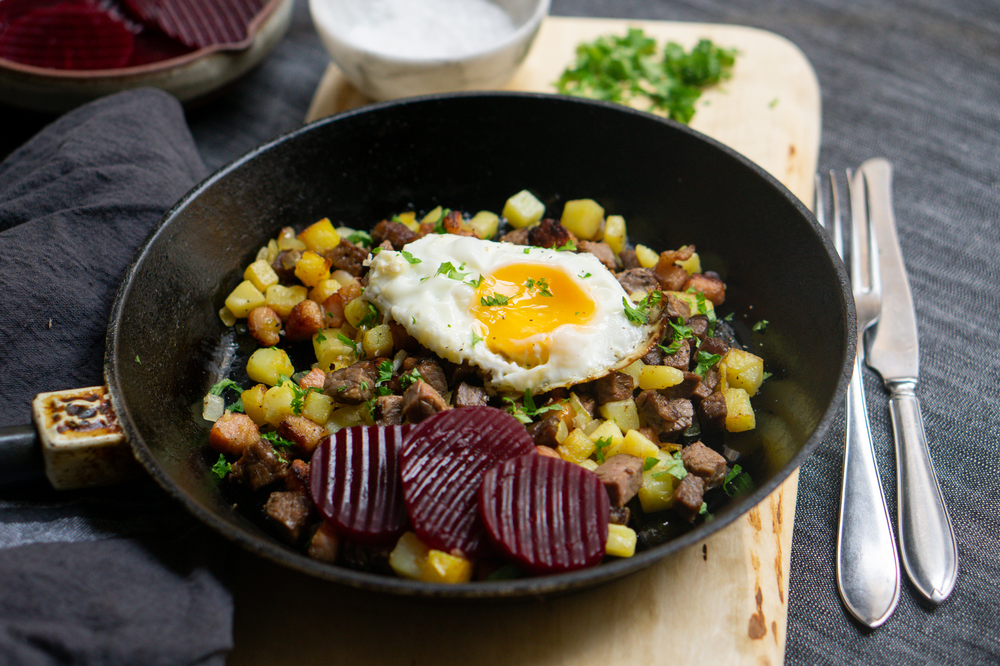

Initially regarded as a simple dish assembled from available leftovers, this rustic hash nowadays stands as the ultimate comfort food and a favorite meal in many Nordic countries. Pyttipanna is incredibly versatile and usually consists of diced potatoes and different types of meat and vegetables that are pan-fried in butter.
Meal prep time : 40 minutes
Servings : 5-6